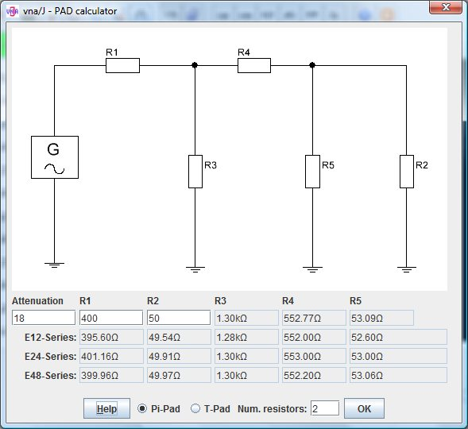

Geben Sie die gewünschet Dämpfung in das Feld Attenuation ein.
Geben Sie die gewünschte Eingangsimpedanz in das Feld R1 ein.
Geben Sie die gewünschte Ausgangsimpedanz in das Feld R2 ein.
Geben Sie die Anzahl der gewünschten Einzelwiderstände je berechnetem Widerstand im Feld Anz. Widerstände: ein.
Um zwischen der Pi- und der T-Schaltung zu wechseln, nutzen Sie die Optionsschalter Pi-Schaltung bzw. T-Schaltung .
Die genau berechneten Werte für die Widerstände R3, R4 und R5 werden rechts den Eingabefeldern für die Widerstände R1 und R2 angezeigt.
In der Zeile E12-Reihe werden die mit dieser Widerstandsreihe erreichbaren Werte für R3, R4 und R5 angezeigt.
In der Zeile E24-Reihe werden die mit dieser Widerstandsreihe erreichbaren Werte für R3, R4 und R5 angezeigt.
In der Zeile E48-Reihe werden die mit dieser Widerstandsreihe erreichbaren Werte für R3, R4 und R5 angezeigt.
Für jede der Widerstandreihe werden die dann damit erreichbaren Eingangs- und Ausgangsimpedanzen angezeigt.
Im Tooltip-Text für jeden berechneten Widerstand R3, R4 und R5 wird die nötige Serienschaltung aus Einzelwiderständen der jeweiligen Reihe angezeigt.
Beispiel: Pi-Schaltung, Dämpfung=18dB, R1=400Ω, R2=50Ω, Anz. Widerstände=2
Es können nicht beliebige Kombinationen aus Dämpfung, Eingangs- und Ausgangswiderstand berechnet werden.
Ist die Berechnung mit passiven Bauteilen nicht möglich, so werden negative Widerstandswerte angezeigt.


Die Berechnung basieren auf dem hervorragenden Beitrag von Ulrich Fleischmann, DL9LX im Deutschen CQ DL Magazin von 02.2011 auf den Seiten 115 und 166.